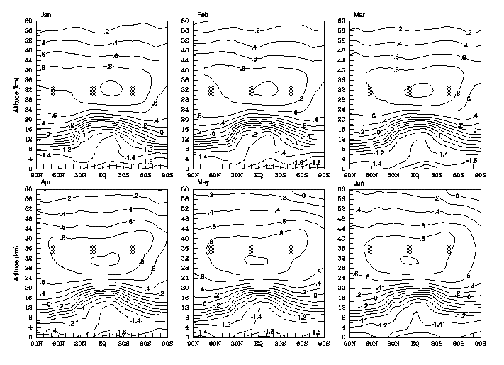
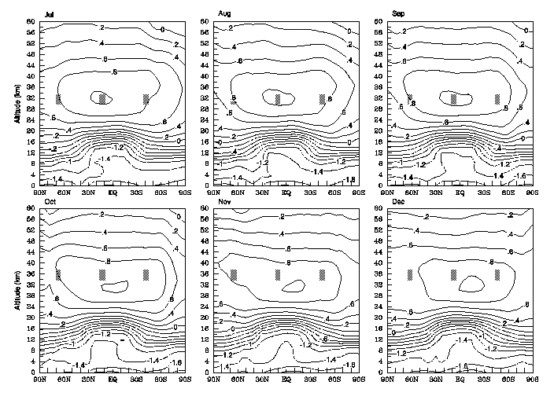

Fig. 4: Monthly mean climatological latitude-altitude distributions of O3 volume mixing ratio (ppmv) logarithm from the combined analysis data. The contour interval is 0.2 units, negative values are dashed, and mixing ratios greater than 5 ppmv are shaded.

